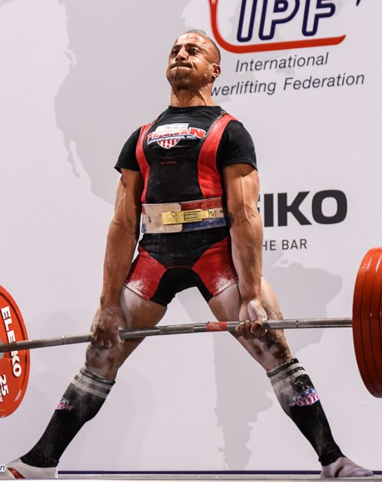
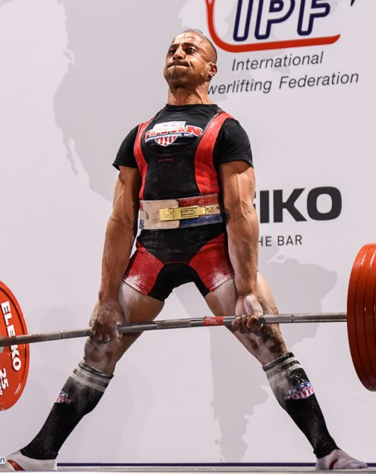

La Fédération Française de Force (FFForce) est une association loi 1901 qui a été fondée le 17 Janvier 2015, suite à la scission de la Fédération Française d'Haltérophilie, Musculation, Force Athlétique et Culturisme (FFHMFAC).
Créée initialement pour fédérer la Force Athlétique et le Développé Couché, la FFForce a élargie ses activités en accueillant le Kettlebell depuis 2016 ; le Macelifting depuis 2018 ; le Bras de Fer Sportif, le Culturisme et le Functional Training depuis 2019.
Son siège social se situe au 156 rue du Faubourg Saint-Denis dans le 10ème arrondissement de Paris et elle est présidée par son fondateur Stéphane HATOT.
La FFForce est agréée par le Ministère chargé des Sports depuis le 1er décembre 2015. Elle est membre du Comité National Olympique et Sportif Français (CNOSF) depuis le 26 mai 2016 et elle a obtenu la délégation pour la Force Athlétique et le Développé Couché au 31 décembre 2016, le Culturisme au 31 janvier 2020, le Bras de fer sportif, Para-Bras de fer sportif et le Kettlebell au 28 mars 2022.
Pour ce qui concerne la Force Athlétique, elle est affiliée à l'International Powerlifting Federation (IPF) et à l'European Powerlifting Federation (EPF). Pour le Culturisme, elle est affiliée à la World Natural Body Building (WNBB). Pour le Bras de Fer Sportif, elle est affiliée à la World Armwrestling Federation (WAF). Pour le Kettlebell, elle est affiliée à l'International Union of Kettlebell Lifting (IUKL). Pour le Macelifting, elle est affiliée à l'International Macelifting Federation (IMF).
La FFForce est représentée sur l'ensemble du territoire français grâce à 12 ligues métropolitaines et 3 ligues ultra-marines. Au 31 décembre 2023, elle compte 10 562 licenciés pour 318 clubs affiliés.
Promouvoir nos disciplines, assurer un accueil des pratiquants et pratiquantes dans les meilleures conditions.
Assumer la responsabilité de l'arbitrage. Former et préparer les arbitres pour l'ensemble des compétitions.
Fixer et garantir les règles techniques des mouvements. Délivrer les titres, les licences mais aussi les diplômes.
Organiser les compétitions nationales (Championnats de France, Challenge Jean Villenave, Deadlift Battles).
Chaque sportif est responsable de la prise des substances détectées dans ses échantillons d'urine ou de sang.
Fédérer la pratique de nos disciplines amateurs en régions grâce à une organisation administrative décentralisée.
Encadrer les athlètes des équipes de France des catégories Sub-juniors, Juniors et Seniors.
Promouvoir les valeurs de laïcité, tolérance et mixité. Lutter contre les formes de discrimination.
Proposer des formations de nos disciplines afin d'acquérir des niveaux initiateurs, moniteurs et entraîneurs.
Mettre en avant les bienfaits du sport et sensibiliser les acteurs aux gestes qui sauvent et à la prévention des blessures.